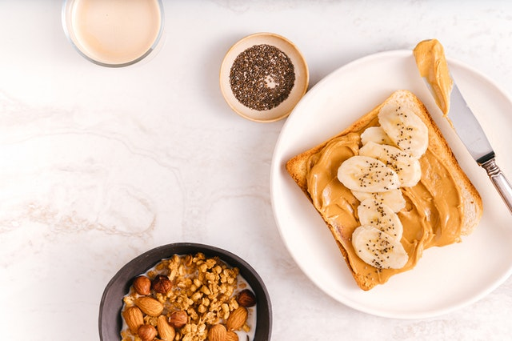

Desayuno 1
Tostadas hechas a mano con mantequilla de mani o jalea, ya cual sea tu gusto
Bienvenidos a Dulces Maravillas, donde encontraran postres, pasteles de cumpleaños, pays, etc. a un gran precio y de excelente calidad.
Contamos con desayunos todas las mañanas en un horario de 8 am a 11:30 am
Tostadas hechas a mano con mantequilla de mani o jalea, ya cual sea tu gusto
Huevo estrellado acompañado de frijolitos caseros, tomates cherry, dos rebanadas de tocino cocido y nuestro delicioso bagget hecho a mano en nuestra reposteria, con jugo o café de su elección
Dos huevos estrellados encima de riquisimo pan tostado con mantequilla hecho a mano en nuestra reposteria, acompañado de frijoles caseros con queso encima y de beber, nuestro delicioso café
Delicioso emparedado de omellete con queso blanco y tocino, hecho con pan recien hecho acompañado con jugo o café de su elección
Deliciosos HotCakes esponjositos, con mantequilla, bañados en miel y acompañados de la fruta de tu preferencia